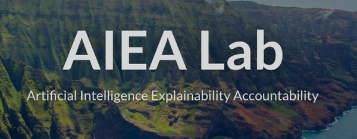

UCSC AIEA Research Lab
Robustifying Autonomous Vehicles Researcher

As a student researcher on artificial intelligence, my team and I focus on enhancing the reliability and safety of self-driving vehicles. I work on developing algorithms and systems that enable autonomous vehicles to handle various uncertainties and challenges, such as unpredictable road conditions, sensor noise, and complex traffic scenarios. This involves research in areas like machine learning, computer vision, sensor fusion, and control systems to ensure that the vehicles can operate safely in diverse and dynamic environments, even in the face of unexpected events. Ultimately my goal is to make autonomous driving more resilient, adaptable, and secure.